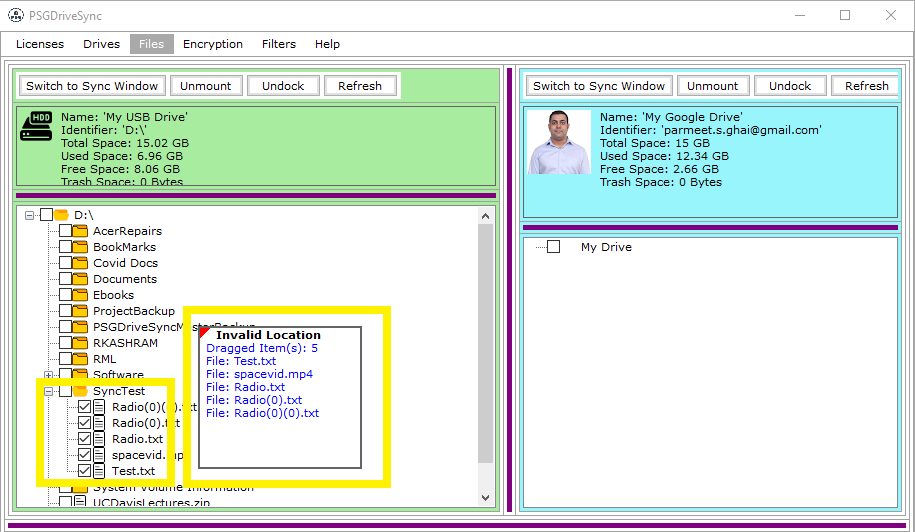
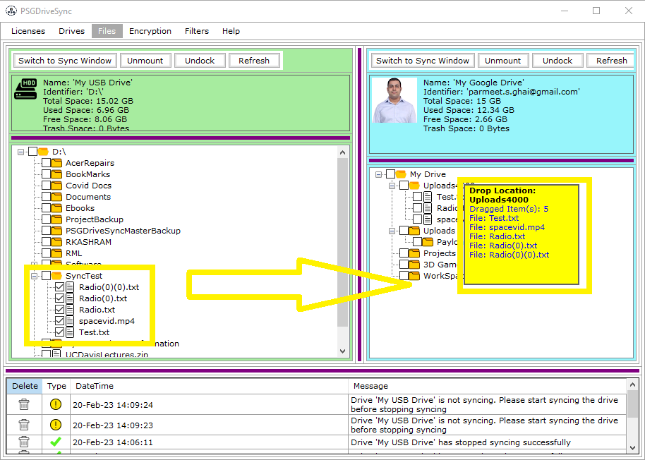
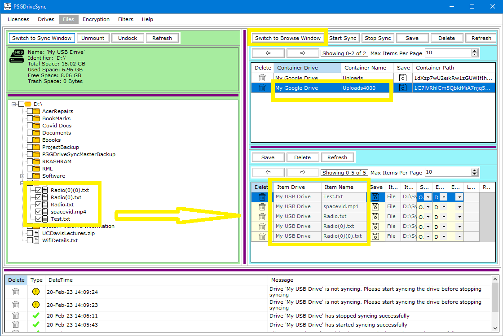
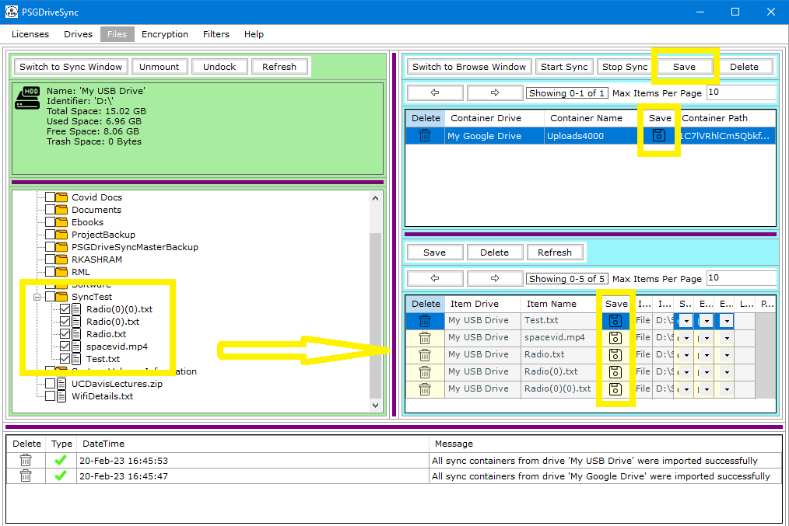
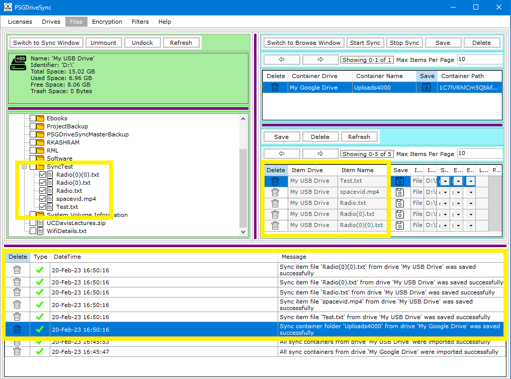

Sync containers are always folders while sync items can be both files and folders. These are just terminologies given to files and folders during sync operations
to help control the sync operations. A Sync operations always exists between two drives. One drive will act as an destination while the other drive will act as a
source. Files and folders get transferred from the source drive to a destination drive and sometimes, due to both ways syncing, from the destination drive to
source drive.
No matter what the scenario is, only a folder can contain files and other folders which is why folders on the destination drives are termed as "Sync Containers" while
all other files and folders from the source drive are termed as "Sync Items". Sync Items themselves cannot exist on their own. They need a Sync Container to be linked
to so they may exist linked to that sync container. If a sync container is deleted then its linked sync items are also deleted.
Relationship between Sync Containers and Sync Items can be many to many which means that one Sync Container can contain multiple Sync Items and one Sync Item can be
linked to multiple Sync Containers.
Following are the steps needed to be performed in order to add a Sync Container and Its linked Sync Items for Sync Operations.
|
1 |
First, we you need to decide which drive will act as the source drive and which drive will act the destination drive. Once decided, Select / Check all files
and folders from the source drive that you would like to be set as Sync Items for sync operations and start dragging one of the selected files
over to the destination drive. |
 |
|
2 |
Dragging the drag box over a folder on the destination drive will make the drag box highlight in yellow color and it will also display the name of the folder that will act as a "Sync Container" on the destination drive for the selected Sync Item files if you decide to drop the drag box over it. Once you have drag box placed over the folder of your choice then you may simply go ahead and drop the drag box by releasing the left mouse button. |
 |
|
3 |
Right after the drag box is released, Please go ahead and click on the "Switch to Sync Window" on the destination drive. That should show the folder on this drive as a Sync Containers and the file and folders from other drive as Sync Items.The Sync Containers are shown in the top level box while sync Items are show in the bottom level box. |
 |
|
4 |
The next step would be to save Sync Container and its linked Sync Items by clicking on "Save" on the top control bar, which is meant for Sync Containers, or the "Save" button on the bottom level box which is meant for Sync Items. Sync Items cannot exist without a Sync Container so you need to save the Sync Container first and then the Sync Items. Saving the Sync Containers automatically saves the Sync Items which are linked to it but you can update individual sync items and save those one by one by using the "Save" button under the Sync Items control bar. |
 |
|
5 |
System messages can be reviewed later on to make sure that all Sync Items were saved along with the Sync Container. |
 |